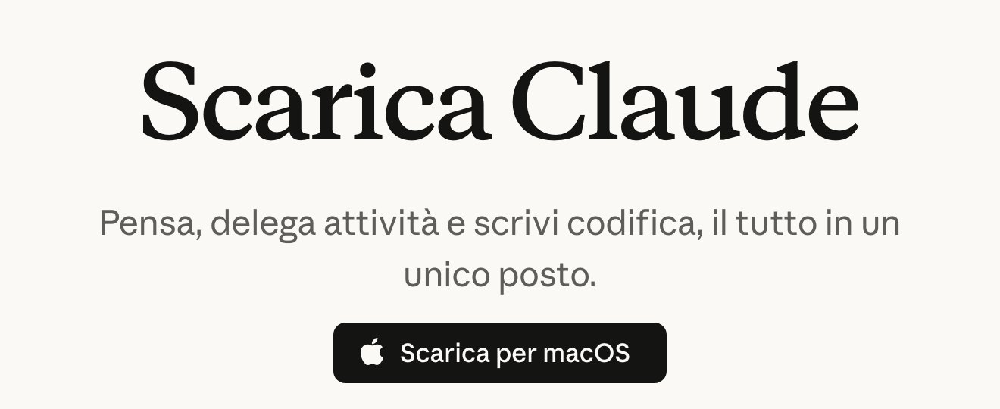
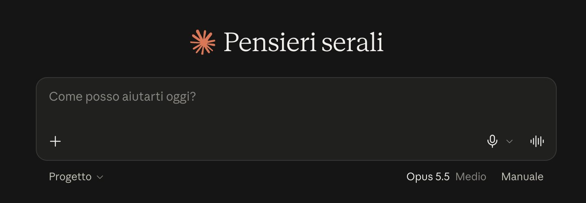
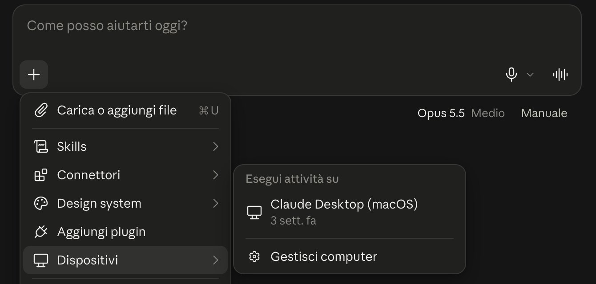
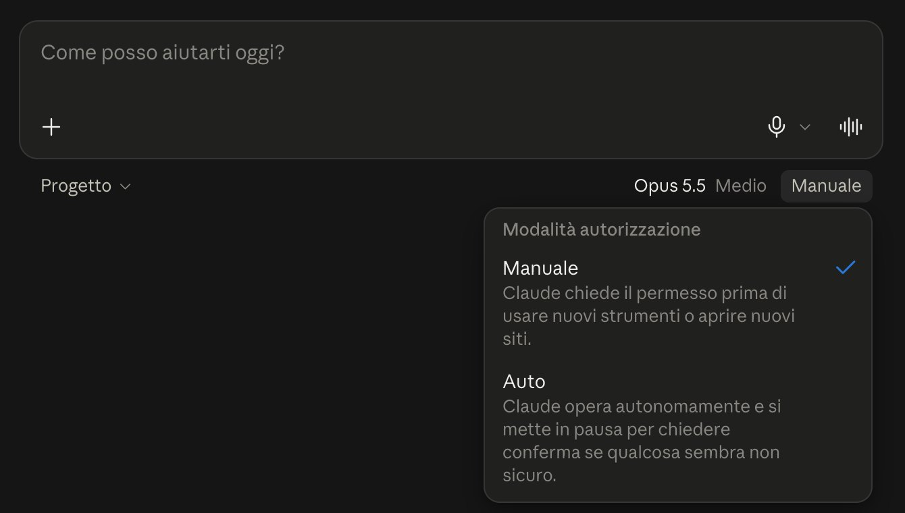
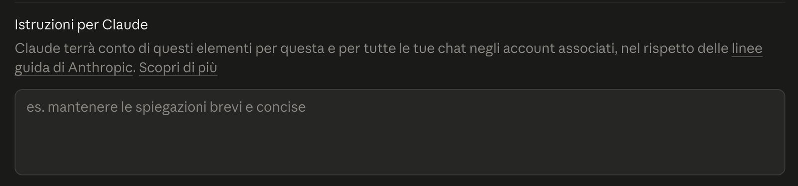
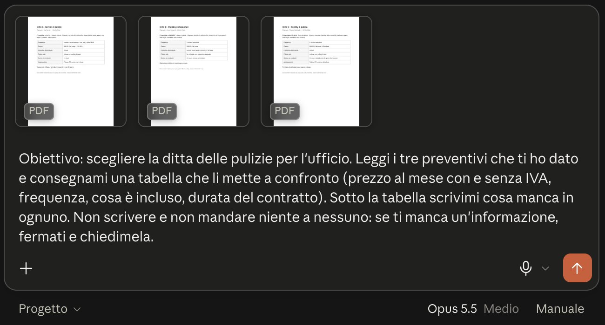
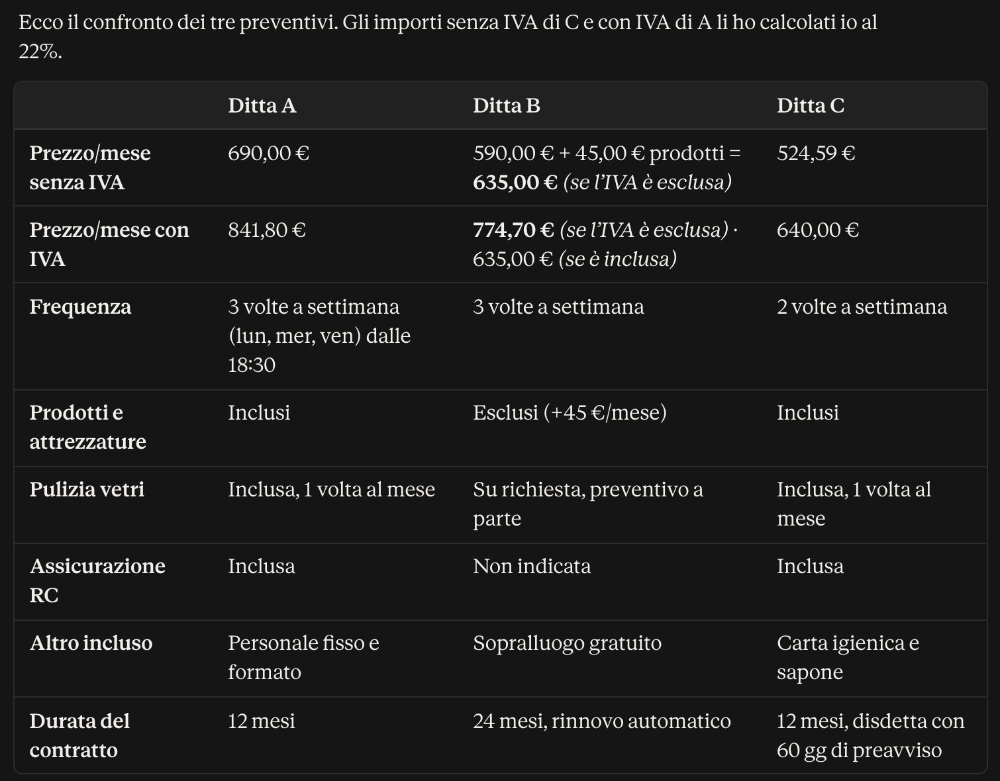
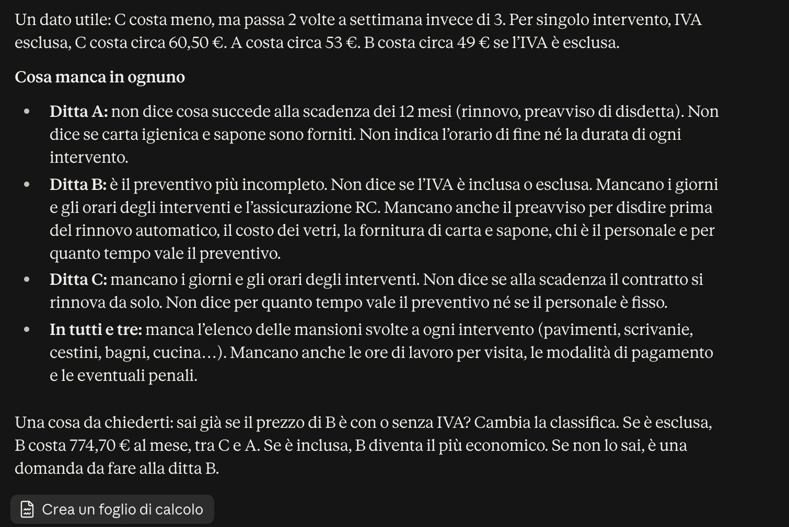

Nel video ti ho spiegato cos'è un agente. Qui lo fai partire: scarichi l'app di Claude, la sistemi in pochi minuti e gli dai il primo lavoro vero. Niente codice: solo l'app e una frase scritta bene.
Un abbonamento a pagamento a Claude (Pro, Max, Team o Enterprise): con il piano gratuito l'agente non c'è. Il piano Pro costa 20 dollari al mese, 17 se paghi l'anno intero; il prezzo aggiornato lo trovi su claude.com/pricing.
E un computer: un Mac (macOS 13 o più recente) o un PC con Windows 10 o più recente.
Niente in più dell'abbonamento: non paghi a consumo. Però ogni piano ha un tetto di utilizzo, uno ogni cinque ore e uno settimanale: se lo raggiungi, Claude si ferma finché il tetto non si azzera. Un lavoro lungo (cerca in rete, legge tanti file, crea documenti) ne consuma di più di una domanda veloce. Quanto ti resta lo vedi in Impostazioni › Utilizzo.
L'agente di Claude si chiama Cowork. In queste settimane Anthropic lo sta unendo alla chat: su molti account non c'è più niente da scegliere, scrivi cosa ti serve e Claude capisce da solo se basta una risposta o se è un lavoro da agente.
Se sotto la casella dei messaggi vedi ancora i due bottoni «Chat» e «Cowork», scegli Cowork. Se non li vedi, hai già la versione nuova: vai avanti senza scegliere niente.
I primi cinque si fanno una volta sola. Il sesto è il primo lavoro vero. Le schermate sono quelle del mio account: la tua app potrebbe avere qualche parola diversa, ma i posti sono gli stessi.
Vai su claude.com/download e scarica la versione per il tuo computer (macOS o Windows). Apri il file scaricato e completa l'installazione. Poi apri Claude dalla cartella Applicazioni (Mac) o dal menu Start (Windows) ed entra con il tuo account.

La pagina ufficiale. Da un PC con Windows, il bottone ti propone la versione per Windows.
L'agente lavora anche dal sito claude.ai e dal telefono, ma solo l'app sul computer può lavorare dentro le tue cartelle. Ed è lì che sta il lavoro vero: preventivi, listini, fatture, documenti.
È la casella dei messaggi, la stessa della chat. Sotto, a destra, vedi due cose: il modello (lascia quello che c'è) e «Manuale», che è il permesso: lo vediamo al passaggio 04.

Nella versione nuova non c'è niente da scegliere: si scrive qui. Se tu vedi «Chat» e «Cowork», tocca «Cowork».
Prima crea sul computer una cartella nuova per questo lavoro (per esempio «Preventivi pulizie») e mettici dentro solo i file che servono. Vanno bene anche le foto fatte col telefono: un preventivo fotografato, un foglio di misure. Poi, nell'app, tocca il + nella casella e scegli «Aggiungi una cartella».
Claude lavora solo nelle cartelle che gli dai, e solo finché l'app resta aperta. Prima di cancellare un file ti chiede sempre il permesso.

Dal + vedi anche «Dispositivi»: sono i computer dove hai l'app di Claude (se ne hai uno solo, vedi solo quello). È lì che l'agente può lavorare sui tuoi file.
Le cartelle con documenti delicati: conti, buste paga, contratti personali. Lo consiglia anche Anthropic. Si comincia da lavori a basso rischio, come con un collaboratore appena arrivato.
Lì le cartelle non ci sono: i file li carichi dal + con «Carica o aggiungi file». È quello che ho fatto io per l'esempio del passaggio 06.
Tocca «Manuale» sotto la casella. Le scelte sono due: Manuale, dove Claude chiede il permesso prima di usare nuovi strumenti (un sito, la tua posta, un programma collegato), e Auto, dove lavora da solo e si ferma a chiederti solo se qualcosa gli sembra non sicuro. Se vedi anche una terza scelta che salta tutte le approvazioni, lasciala stare.
In Manuale non ti ferma a ogni riga: te lo chiede per le cose nuove, come aprire un sito o usare uno strumento che non ha ancora usato.

Per i primi giri lascia Manuale. Passi ad Auto quando ti fidi di come lavora. Auto consuma anche un po' di più dei tuoi limiti, perché ogni azione viene controllata prima.
Solo se gli colleghi la tua posta (dal + › Connettori). Se non la colleghi, non può. Il primo lavoro fallo senza collegare niente: quando lo colleghi, con Manuale ti chiede il permesso prima di usarla.
Apri le Impostazioni (in basso a sinistra, sul tuo nome) e scrivi «istruzioni» nella ricerca in alto: trovi il campo «Istruzioni per Claude». Sul mio account sta in Account, su altri in Generale. Quello che scrivi lì vale per tutte le conversazioni.

L'obiettivo (dove deve arrivare) · i file che può usare · cosa ti deve consegnare · quando si deve fermare. Se ne manca una, l'agente se la inventa.
Tre preventivi di ditte di pulizie (inventati, per la guida), dati a Claude con questo comando:

I tre PDF caricati e il comando, prima di premere invio.
Questo è quello che Claude mi ha consegnato con il comando del passaggio 06. Guarda la fine: un preventivo non diceva se l'IVA era inclusa, e invece di tirare a indovinare si è fermato a chiedermelo. È quello che gli avevo detto di fare.

La tabella: prezzi con e senza IVA calcolati da lui, frequenza, cosa è incluso, durata.

Cosa manca in ognuno, e la domanda finale invece di un'informazione inventata.
La prima volta segui il lavoro dall'inizio alla fine e segnati ogni errore. Ogni errore diventa una regola scritta: la metti nelle istruzioni del passaggio 05, oppure la scrivi nella conversazione («da ora in poi…»). Il giro dopo parte già corretto.
Il lavoro vero non arriva in una cartella ordinata. Tre modi per cominciare lo stesso, sempre con l'ultima parola tua:
Per cominciare non serve collegare WhatsApp. Salva nella cartella del lavoro le foto e i PDF che ti arrivano (misure, preventivi, bolle), così come sono, e chiedigli di metterli in ordine: una tabella, un riepilogo, cosa manca. Se poi vuoi Claude dentro WhatsApp, c'è la mia guida «Claude sul tuo WhatsApp, senza rischiare il numero».
Collega la tua posta dal + › Connettori e chiedigli di preparare le bozze delle risposte. Le leggi e le mandi tu: è il modo giusto di cominciare.
Metti nella cartella le misure, il tuo listino e un preventivo vecchio fatto bene, e chiedigli una bozza nello stesso formato. Prezzi e conti li controlli tu prima di mandarlo.
Non tutto merita un agente. La domanda da farti è una: il lavoro è sempre uguale, o cambia ogni volta?
Se fai sempre la stessa cosa nello stesso modo, senza niente da decidere. Qui un agente è sprecato: costa di più e può sbagliare, mentre un'automazione fa sempre la stessa cosa.
Se ti serve solo una risposta o una bozza, che poi usi tu da qualche parte.
Se il lavoro cambia ogni volta: c'è da cercare, leggere, capire e decidere di conseguenza.
Controlla di avere un piano a pagamento: con quello gratuito l'agente non c'è. Se il piano è giusto e non vedi «Chat» e «Cowork», hai la versione nuova: scrivi direttamente il lavoro nella casella.
L'app di Claude deve restare aperta sul computer, e la cartella deve essere tra quelle che gli hai dato (passaggio 03). Se chiudi l'app, il lavoro continua ma non arriva più ai tuoi file: riapri l'app e, se si è fermato, scrivigli di continuare. Il lavoro fatto fino a lì lo ritrovi nella conversazione.
È normale: l'app si sta aggiornando prima di cominciare. Aspetta qualche secondo.
Metti i lavori collegati in una conversazione sola (per esempio tutti i preventivi della stessa commessa), apri una conversazione nuova per le cose che non c'entrano, e se ti basta una risposta veloce diglielo. Quanto ti resta lo vedi in Impostazioni › Utilizzo.
Per Mac e Windows. L'app è gratuita, l'agente no: serve un abbonamento Pro (20 dollari al mese, 17 con l'annuale) o superiore.
Richiedi una chiamata gratuita con me. In 20 minuti mi racconti cosa rifai ogni settimana e ti dico da dove conviene cominciare.
Richiedi la chiamata gratuita →raffaelerussoai.com/chiamata-gratuita